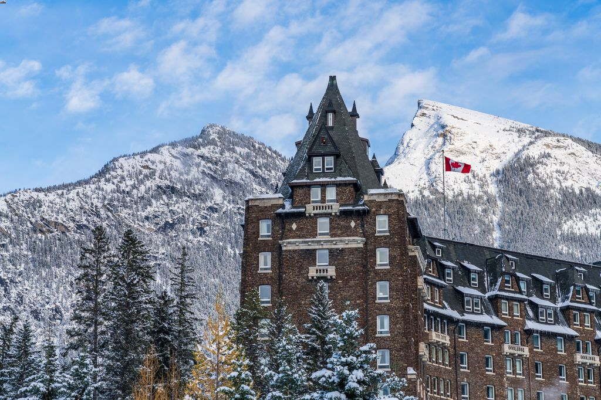

«
⇧
CANADA
Cities in Canada are cosmopolitan, secure, warm, and multiethnic. In fact, Canada is frequently praised
as one of the most livable nations in the world. Canada won't let you down whether your interests are live
theater or river rafting. Canada is home to a large number of modern, unique cities, each with an own
personality. The most well-known are probably Toronto, Montreal, and Vancouver, but there are a ton of others
that focus on different aspects of Canada, including its marine culture, mountainous terrain, French history, or
indigenous people. Every city is charming for a different reason.
PLACES TO VISIT
1. NIAGRA FALLS
WHY VISIT NIAGRA FALLS?
- View the stunning waterfalls
- At the Niagara Fallsview Casino Resort, get your game on..
- Visit the MarineLand attraction.
2. JASPER NATIONAL PARK
WHY VISIT JASPER NATIONAL PARK?
Jasper National Park, one of Canada's wildest locations, offers kaleidoscope views around every
corner. As they make their way from Mount Edith Cavell's peaks to Maligne Canyon's caverns, hikers may take
in a variety of stunning sights. The park, which is located on Alberta's eastern border, acts as a guide for
travelers in the Northern Hemisphere. Along with Banff and a few other parks, Jasper, which has the
distinction of being the largest park in the Canadian Rockies, is a component of the UNESCO World Heritage
Site. Travelers can find species like caribou, wolverines, and moose on the more than 2.7 million acres of
territory to explore.
3. BANFF

WHY VISIT BANFF?
The beautiful mountains, vivid lakes, and easy access to a variety of outdoor pursuits make Banff
National Park famous. In the great solitude of the Canadian Rockies, the park extends across 6,641 square
kilometers (2,564 square miles) of spectacular rugged scenery. It has a long history as one of the most
breathtaking mountain locations in the world. It is the third national park in the world and the first in
Canada.